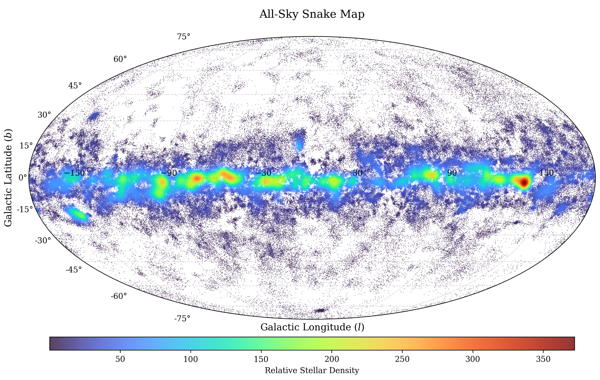
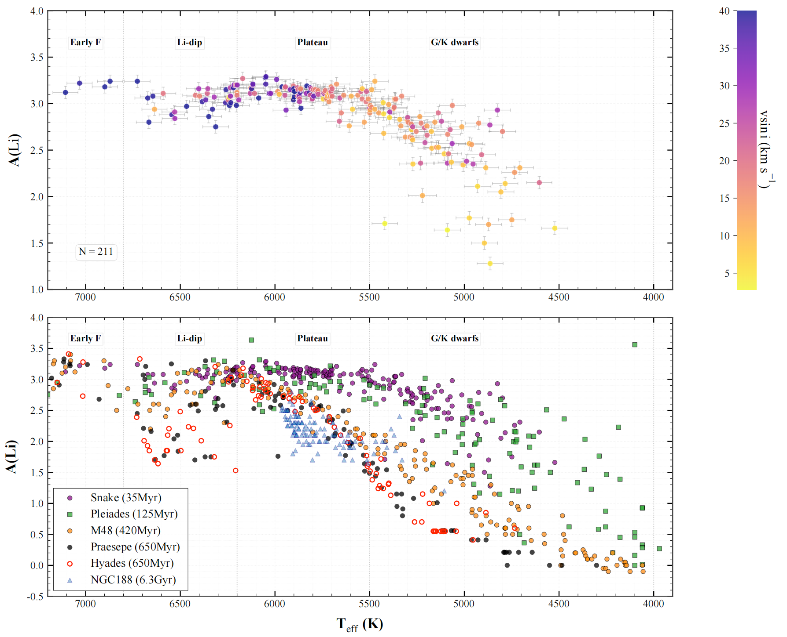
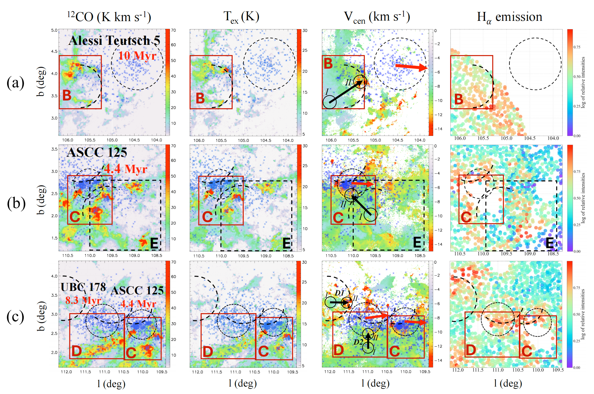
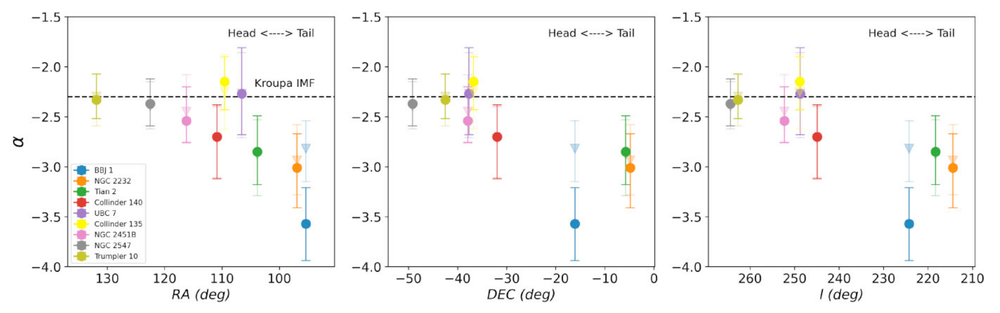
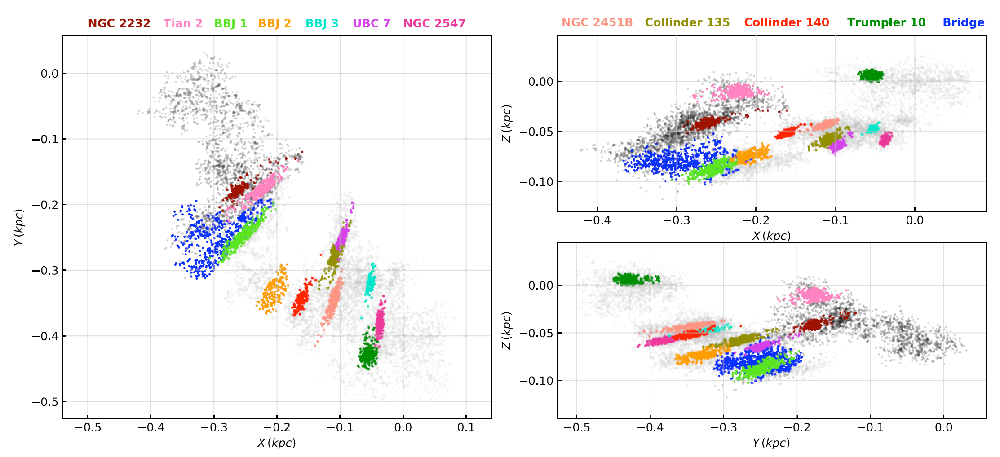
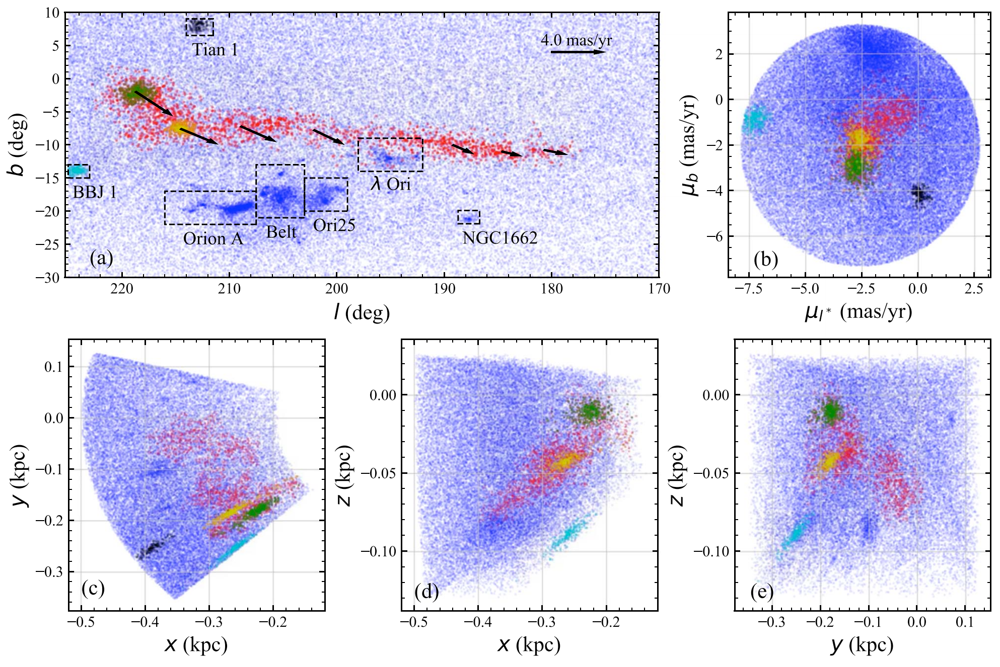

The Stellar Snake Series
A Hierarchical Census of Nearby Stellar Complexes in the Solar Neighborhood
The Stellar Snake series represents a systematic investigation of extended,
kinematically coherent stellar complexes in the solar neighbourhood. First discovered in
Gaia DR2 (Tian 2020), the Snake has since been revealed as a hierarchically
primordial structure spanning hundreds of parsecs, containing thousands of member stars and
multiple open clusters. The series explores the formation, dynamics, mass function,
chemical evolution, and large-scale census of these snake-like stellar systems —
from the original 30–40 Myr structure to a full 3 kpc census of over
1,100 stellar snake candidates.
Paper V

2026 arXiv (in preparation)
A Gaia-source-level census of Stellar Snake complexes within 3 kpc of the Sun.
Identifies 1,192 Snake candidates comprising 776,021 member stars, with
a graph-relation Snake Reliability Index (SRI) and Gold/Silver/Bronze quality flags.
The catalogue reveals age–metallicity gradients, declining upper envelopes
toward older ages, and strong spatial association of young Snake nodes with
spiral-arm loci and the Radcliffe Wave.
Paper IV

2026 ApJL, 999, L24
Discovery of a lithium dip (Li dip) in the 35±5 Myr Snake,
challenging the classical view that Li dips emerge only at ages ≳150 Myr.
Within the dip temperature range (6200–6800 K), a significant correlation
is found between rotational velocity and lithium depletion. Fast rotators
(v sin i > 25 km s⁻¹) exhibit stronger Li depletion, suggesting rotational
shear enhances turbulent mixing and accelerates Li destruction.
View on IOPscience
Paper III

2026 ApJS, 284, 42
Combining Gaia DR3, MWISP CO, and LAMOST DR11, this work identifies
5,683 member stars (median age 7.6 Myr) in Snake III and reveals how
cloud density and early feedback jointly regulate star formation.
Molecular cloud density increases with Galactic longitude. Older clusters
form in cavities near high-density regions, while young field stars form
in present-day high-density environments.
View on IOPscience
Paper II

2024 MNRAS, 530, 4970
A comprehensive investigation of the mass function (MF) of the Snake.
Systematic variations in the MF along the elongation direction are discovered:
the “head” follows a canonical IMF (α ∼ −2.3), while the “tail” becomes
more top-light, indicating delayed formation of massive stars.
The binary fraction (q > 0.3) for Snake clusters is concentrated between
30% and 50%, with predominantly negative γ, indicating lower-mass companions.
View on arXiv
Paper I

2022 MNRAS, 513, 503
The first comprehensive census of the Snake, revealing a hierarchically
primordial structure with over 10,000 member stars, 11 open clusters,
and an age of 30–40 Myr. The structure is expanding and best explained
as formed from a filamentary giant molecular cloud. Four kinematic groups
are identified, with expansion ages (∼33 Myr) consistent with the stellar age.
View on MNRAS
Initial Discovery

2020 ApJ, 904, 196
The original discovery of the stellar Snake — a young (30–40 Myr)
snake-like structure in the solar neighbourhood from Gaia DR2.
Spanning >200 pc with two dissolving cores (NGC 2232 and Tian 2),
the Snake is hierarchically primordial and likely extends the Vela OB2 association.
Total mass >2000 M⊙. The structure is too young to be explained by tidal tails.
View on IOPscience
Related Publications
- Tian, H.-J. (2020). Discovery of a Young Stellar Snake with Two Dissolving Cores in the Solar Neighborhood. ApJ, 904, 196 [IOPscience]
- Wang, F., Tian, H.-J.*, et al. (2022). The Stellar “Snake” – I. Whole Structure and Properties. MNRAS, 513, 503 [MNRAS]
- Yang, X.-M., Bird, S.A., Li, J., Tian, H.-J.*, et al. (2024). The Stellar “Snake” – II. The Mass Function. MNRAS, 530, 4970 [arXiv]
- Li, J.-P., Tian, H.-J.*, Wang, C., Yang, X.-M., Wang, F. (2026). The Stellar “Snake”. III. Coevolution of Stars and Molecular Clouds. ApJS, 284, 42 [IOPscience]
- Zhang, Y.-Y., Tian, H.-J.*, Shi, J.-R., Xie, C.-C., Yang, X.-M. (2026). Emergence of a Lithium Dip in ∼35 Myr “Snake” Open Clusters. ApJL, 999, L24 [IOPscience]
- Yang, X.-M., Zhang, J.-Y., Tian, H.-J.* (2026). The Stellar “Snake”-V: The Census within 3 kpc in the Solar Neighborhood. arXiv:2402.04130 [arXiv]